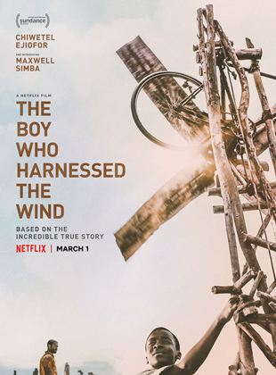

Filmes Populares
Velozes e Furiosos
 9.5
9.5
 Favoritar
Favoritar
The Fast and the Furious é uma franquia de mídia e Universo Compartilhado centrado em uma série de filmes de ação que estão amplamente preocupados com corridas de rua, assaltos, espiões e família. A franquia também inclui curtas-metragens, uma série de televisão, videogames e atrações de parques temáticos
Minha mãe é uma peça 2
9.8
Favoritar
Dona Hermínia passa a apresentar um bem-sucedido programa de TV e fica rica. Porém, ela agora precisa lidar com um lar vazio, pois Juliano e Marcelina resolveram sair de casa. Para balancear, Garib, o primogênito, chega com o neto. Além disso, também recebe uma longa visita da irmã Lucia Helena, a ovelha negra da família, que mora há anos em Nova York

O Menino Que Descobriu o Vento
10
Favoritar
Sempre esforçando-se para adquirir conhecimentos diversificados, um jovem de Malawi se cansa de assistir todos os colegas de seu vilarejo passando por dificuldades e começa a desenvolver uma inovadora turbina de v